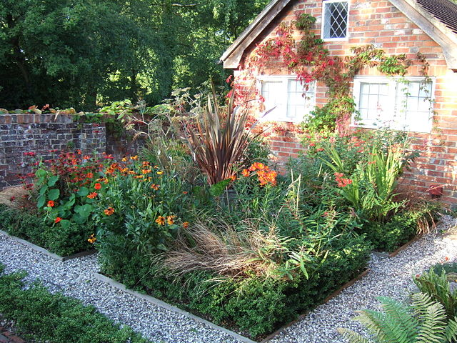

 Gardening is the practice of growing and cultivating plants as part of horticulture. In gardens, ornamental plants are often grown for their flowers, foliage, or overall appearance; useful plants, such as root vegetables, leaf vegetables, fruits, and herbs, are grown for consumption, for use as dyes, or for medicinal or cosmetic use. Gardening is considered by many people to be a relaxing activity.
Gardening ranges in scale from fruit orchards, to long boulevard plantings with one or more different types of shrubs, trees, and herbaceous plants, to residential yards including lawns and foundation plantings, to plants in large or small containers grown inside or outside. Gardening may be very specialized, with only one type of plant grown, or involve a large number of different plants in mixed plantings. It involves an active participation in the growing of plants, and tends to be labor-intensive, which differentiates it from farming or forestry.